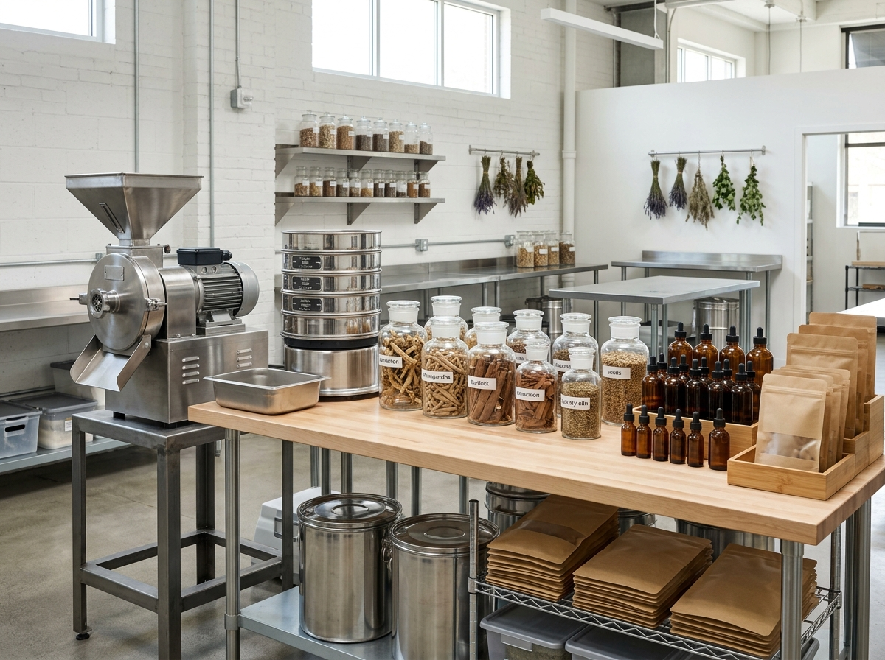

Fertility & Reproductive Wellness
Personalized clinical support for individuals and couples navigating fertility, hormonal harmony, and conception.
Explore Fertility Care →Better health through natural and holistic care, fertility support, and informed guidance.
Your Fertility Journey Deserves a Trusted Care.
We support individuals and couples navigating fertility and reproductive wellness through personalized guidance, relevant health information, appropriate testing, and natural wellness support.
We do not believe in one approach for everyone. Every fertility journey has its own circumstances, and understanding those circumstances is an important part of providing responsible support.
Structured natural wellness pathways tailored to individual needs, responsible care, and professional practice.
Personalized clinical support for individuals and couples navigating fertility, hormonal harmony, and conception.
Explore Fertility Care →Carefully prepared herbal remedies and practical guidance developed to support natural healing and systemic vitality.
Explore Herbal Care →Raw botanical materials, custom milling, processing, packaging, and encapsulation for practitioners and wellness businesses.
Explore Supply & Processing →Empowering patient decisions through clear, accessible clinical education, wellness articles, guides, and webinars.
Explore Resources →Truth before profit, always. We do not promise what we cannot deliver. Good wellness practice begins with how you treat people.
Clear communication, even when it is uncomfortable.
Health education that enlightens, not confuses.
Right actions guided by conscience and faith.
True healing respects time and biological process.
High standards in care, detail, and botanical delivery.
Relationships built on safety, privacy, and confidence.
We don't rush to conclusions. We don't promise what we can't deliver. We follow a thoughtful process to understand how best deliver the care you deserves.
We begin by understanding your concerns, history and needs.
Where appropriate, we consider relevant health records and test results to understand your situation.
We provide clear, responsible guidance based on the nature of your clinical needs.
We encourage appropriate follow-up and continued care throughout your healing journey.
Explore our range of Criterion herbal and natural wellness products, developed to support different health and wellness needs.
Our Herbal Supply & Processing Division supports practitioners, wellness businesses and other organisations with access to herbal raw materials and processing services.
Our growing capabilities include:
Whether you need herbal materials for your practice, products for your business, or processing support, our supply division is being built to serve growing demand.

We believe health education should make things clearer, not more confusing. Through articles, webinars, guides, books and educational content, we share practical information about fertility, natural medicine, herbal wellness and healthier living.
Explore ResourcesWhether you are seeking fertility support, exploring natural wellness, looking for the right product, or interested in our herbal supply services, we're here to help you take the next appropriate step.